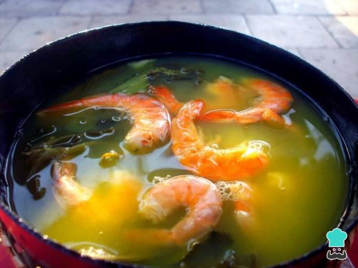

Caldeirada de Tambaqui
Caldeirada de Tambaqui
Ingredientes
- 1 kg de tambaqui (pode ser só costela ou só lombo ou os dois)
- 3 tomates sem sementes cortados em 4 partes
- 3 cebolas cortadas igual ao tomate
- 15 pimentas de cheiro sem sementes e cortadas no meio (se preferir)
- maço de cheiro verde (coentro)
- 1 maço de cebolinha picadinha
- (colorifico) ou massa de tomate à gosto, mas o suficiente para dar uma corzinha ao caldo
azeite
- Azeite de oliva a gosto
- colher de sobremesa de vinagre
- Sal a gosto
Tacacá

Tacacá
Ingredientes
- 4 xícaras (chá) de água
- 1 colher (chá) de sal
- 4 folhas de chicória
- 3 pimentas-de-cheiro
- 2 litros de tucupi
- 1/2 xícara (chá) de polvilho azedo (ou goma de mandioca)
- 500 g de camarão salgado (seco)
- 4 dentes de alho bem amassados
- 2 maços de jambu